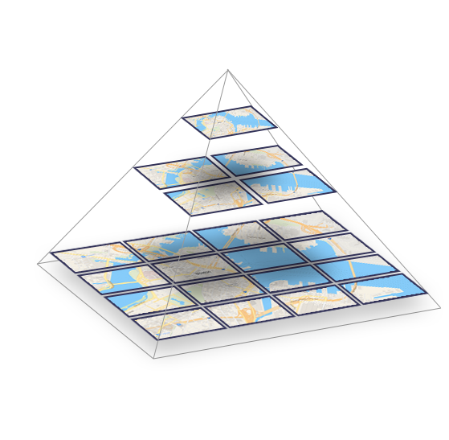
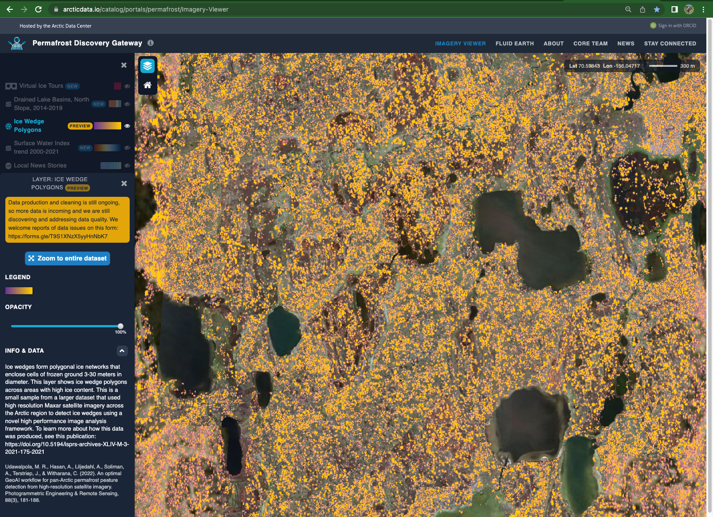

15 Group Project: Visualization
15.1 Setup
In your fork of the scalable-computing-examples repository, open the Jupyter notebook in the group-project directory called session-17.ipynb. This workbook will serve as a skeleton for you to work in. It will load in all the libraries you need, including a few helper functions we wrote for the course, show an example for how to use the method on one file, and then lays out blocks for you and your group to fill in with code that will run that method in parallel.
In your small groups, work together to write the solution, but everyone should aim to have a working solution on their own fork of the repository. In other words, everyone should type out the solution themselves as part of the group effort. Writing the code out yourself (even if others are contributing to the content) is a great way to get “mileage” as you develop these skills.
15.2 Resampling rasters
In this portion of the group project, we will further process the raster files by resampling them to lower zoom levels. This means we will take the average of clusters of pixels, and that value will be assigned to the single pixel that encompasses the entire area that is represented by the original cluster of pixels. Here is an example of creating a zoom level 10 pixel from 4 zoom level 11 pixels:
As we aggregate cells to produce rasters at lower zoom levels, the cell size increases, but the extent of the raster remains the same. This is called “downsampling”.
After we do this for each zoom level, you can imagine they are organzied as a pyramid, with the lowest zoom levels (and lowest resolution rasters) at the top, like so:

The highest zoom level has the most rasters. As we create the lower zoom levels, we aggregate the rasters only from the zoom level directly above. As the zoom level decreases, our computation is faster.
Check out the Permafrost Discovery Gateway Imagery Viewer and zoom in and out. You can see for yourself how the resolution increases and the extent that you are trying to view decreases.

The higher resolution tiles are the “child” tiles, and the lower resolution tiles are the “parent” tiles.
15.2.1 Package Citations
os parsl pdgstaging pdgraster geopandas random matplotlib ipyleaflet